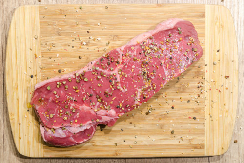

Meat

Dish difficulty: ★★★☆☆
Ingredients
- 12 lb turkey
- Flavored Butter
- 1 cup (2 sticks or 226 grams) unsalted butter, softened
- 2 Tbsp olive oil (not extra virgin), plus more to drizzle the top
- 4 Tbsp fresh lemon juice (from 1 large lemon), plus 1/2 Tbsp lemon zest
- 3 large garlic cloves, pressed
- 1/4 cup freshly chopped parsley
- 1/2 Tbsp salt (I used sea salt)
- 1/2 tsp black pepper, freshly ground
- Turkey Stuffing
- 1 large onion, quartered (no peeling)
- 4 garlic cloves, halved (no peeling)
- 1/2 bunch parsley
- 1 lemon, quartered
- Salt & Pepper
Cookware
- Kitchen String
- Heavy duty foil
- A heavy roasting pan
- A temperature probe
Preparations
If using a frozen turkey, defrost it in its plastic bag in the refrigerator for 3 days prior to roasting.
Remove turkey from fridge about 30 minutes before you start working with it. If the turkey is closer to room temperature, it will bake more evenly.
Remove the neck and bag of giblets from the turkey.
Pat dry turkey with paper towels. Let turkey sit in over paper towels to soak up any excess water from the turkey.
Fold the wings behind the turkey; if you don't they are the quickest to scorch and dry out.
Seasoning, Stuffing and Tying up a Turkey
- Season inside of turkey cavity generously with about 1 tsp salt and 1/4 tsp pepper.
-
In a medium bowl, combine: 2 sticks softened butter, 2 Tbsp olive oil, 1/2 Tbsp lemon zest, 4 Tbsp lemon juice, and 3 pressed garlic cloves,
1/4 cup chopped parsley, 1/2 Tbsp salt, 1/2 tsp pepper. Mash/stir with a fork until well combined (the lemon juice doesn't easily stir into butter,
but keep mixing and it will happen after a few minutes). This mixture was adapted from Gordon Ramsay's Christmas Turkey video and it's wonderful.
Take a whiff of it; you'll fall in love with how fresh it smells!
-
Separate the skin from the turkey breast by pushing your fingers under the skin.
Do this from the front and the back of the turkey, being careful not to tear the skin.
-
Stuff 2/3 of the butter mixture under skin then spread the butter around by massaging over the top of the skin.
This butter keeps the turkey breast tender, juicy and provides rich flavor.
-
Rub remaining butter over the outside of the turkey (breast, legs, wings).
Drizzle all over the top of the turkey with olive oil and generously season with salt and pepper;
I just love a crisp, salty skin.
-
Stuff turkey with quartered onion, 4 halved garlic cloves, 1/2 bunch parsley and quartered lemon. Tie turkey base and legs together;
crossing the legs to better close up the turkey cavity, plus it looks extra fancy on the table.
Roasting the Turkey
(This website is only intended to showcase its html design! None of the recipes here are original.
For full recipe on the roast turkey, please visit Natasha's Kitchen instead.)
Homepage